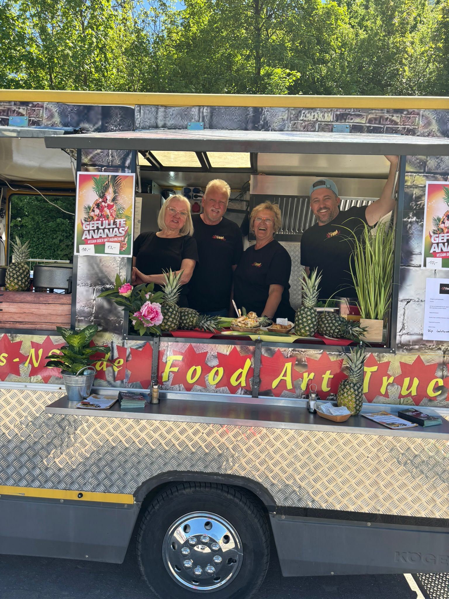

FoodArt – wenn Design
wirklich ankommt.
Zwei Logos, ein Foodtruck, ein Schützenhaus – und ein Kunde, der nach der Zusammenarbeit sagte: „Endlich mal jemand, der mich verstanden hat." Genau solche Momente sind der Grund, warum ich diesen Job liebe.
Das Restaurant „Schützenhaus“ ist seit 1980 ein beliebter Treffpunkt und Eventort in Neckarsulm. Der Inhaber Reinhard Stanschus, welcher mich beauftragte, betreibt das Lokal zusammen mit seiner Frau, dem Schwager und einem erfahrenen Serviceteam. Das Projekt FoodArt kam mit einer klaren Persönlichkeit, aber noch ohne visuelles Gesicht. Gefragt waren zwei Logos — eines für das Schützenhaus, eines für den Foodtruck — die zusammen eine Marke ergeben und die Zugehörigkeit wiederspiegeln.
Nach der Abstimmung über Stil, Zielgruppe und Wirkung entstanden die Entwürfe. In enger Abstimmung mit dem Kunden entstand das FoodArt-Logo. Am Ende der Feedbackschleifen hatten wir nun zwei sauber gestaltete Logos, aber der Kunde konnte sich noch nicht ganz vorstellen, wie das Logo auf dem FoodTruck oder den Servicejacken des Teams aussehen würde.
Ich baute dem Kunden daraufhin Mock-ups, die ihn überzeugten. Beim Abschluss des Projektes erhielt der Kunde ein sauber gestaltetes Corporate Design als PDF, die Logos als ZIP-Datei in PNG, JPG und natürlich den offenen Daten EPS/AI. Es gab beim Prozess kein langes Hin-und-Her, keinen Kompromiss — sondern das Gefühl, wirklich gehört worden zu sein. Diese Reaktion ist unbezahlbar.
Was dann folgte, war handwerkliche Präzisionsarbeit: 16 T-Shirts in verschiedenen Größen, drei Druckpositionen, dreifarbig mit Plotterfolie bedruckt — alles von Hand, in meinem eigenen kleinen Büro. Das Logo ist mehrteilig und muss an den Nähten exakt zusammenpassen, sonst stimmt das Gesamtbild nicht. Jedes Shirt wurde einzeln ausgerichtet, angedrückt und geprüft.
Das Ergebnis: Ein komplett ausgestattetes FoodArt-Team, das seine Marke trägt — wortwörtlich. Von der ersten Skizze bis zum fertig bedruckten Shirt, alles aus einer Hand.
